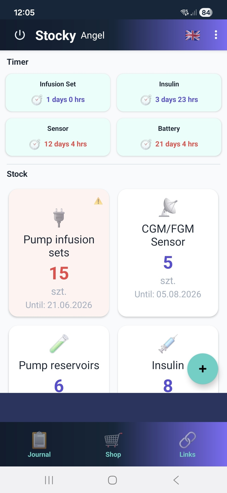
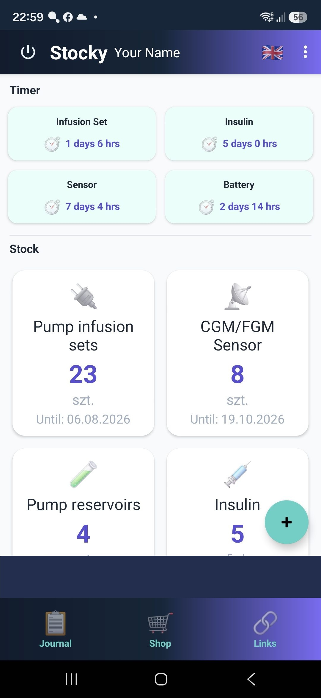
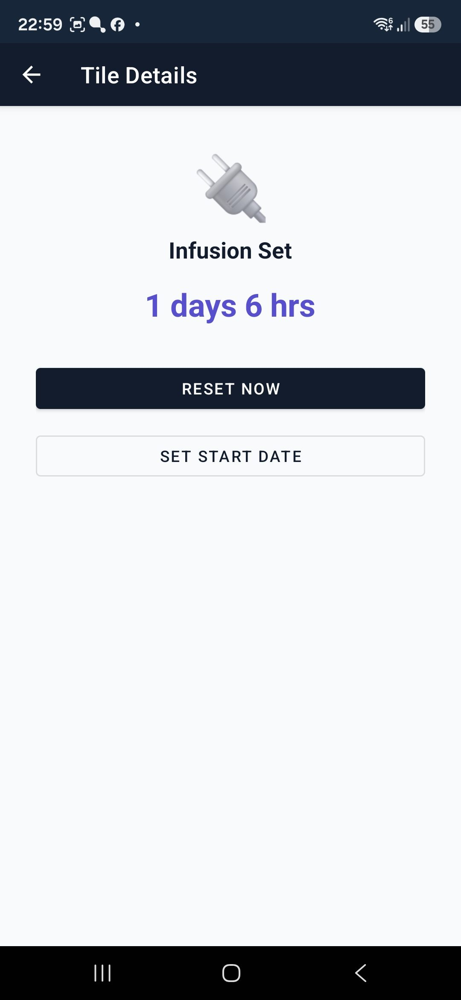
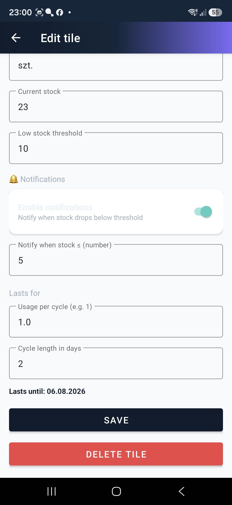
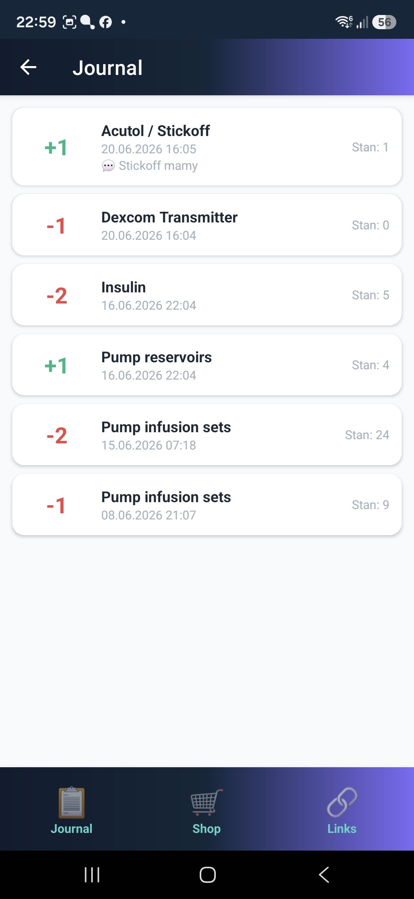
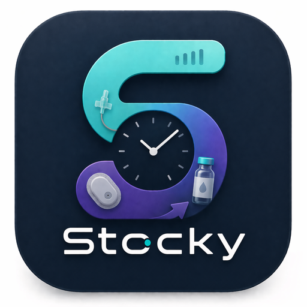

Alert, zanim będzie problem
Ustawiasz próg dla każdego zapasu. Gdy stan spadnie poniżej — dostajesz powiadomienie, a kafelek robi się czerwony. Dokładnie tak, jak w demie powyżej.

Stocky liczy Twoje wkłucia, sensory, insulinę i paski — odlicza dni do wymiany i mówi, kiedy dokupić. Zanim zabraknie.
Liczniki
Wkłucie
—
Sensor
—
Zapasy — kliknij + / −
Wkłucia do pompy
23
wystarczy do —
Paski testowe
12
próg alertu: 10
Zejdź poniżej progu, a zobaczysz alert — tak samo działa aplikacja.
Stocky
Paski testowe ≤ 10 — czas dokupić
Jak działa
01
Kafelki zapasów z ilością i datą ważności, a nad nimi liczniki noszenia. Jedno spojrzenie rano wystarczy.

02
Wkłucie, sensor, bateria — Stocky odlicza dni i godziny. Wymieniłeś? Jeden dotyk „Reset” i licznik startuje od nowa.

03
Podajesz zużycie na cykl i długość cyklu — Stocky wylicza datę „wystarczy do” i alarmuje przy progu, który sam ustawisz.

04
Każde +1 i −1 ląduje w dzienniku z datą, godziną i notatką. Widzisz, ile naprawdę zużywasz.

Funkcje
Ustawiasz próg dla każdego zapasu. Gdy stan spadnie poniżej — dostajesz powiadomienie, a kafelek robi się czerwony. Dokładnie tak, jak w demie powyżej.

Zużycie × cykl = konkretna data. Bez zgadywania „chyba jeszcze mam”.
Pełna historia z datą, godziną i notatką. Wiesz, co się działo z każdą sztuką.
Emoji albo własne zdjęcie, dowolna nazwa i jednostka — szt., fiol., pack.
Interfejs przełączysz jednym dotknięciem — tak jak tę stronę.
Lista rzeczy do dokupienia i Twoje zapisane strony — dokładnie wtedy, gdy alert mówi „czas”.
Demo
Sprawdź video: dodanie kafelka, licznik, alert i dziennik.

Pobierz Stocky na Androida i dodaj pierwszy kafelek w minutę.
Pobierz APK (Android)Wkrótce także w alternatywnych sklepach z aplikacjami.
Kontakt
Pytanie, pomysł, błąd? Wiadomość trafi prosto na moją skrzynkę.